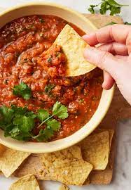

Salsa Roja

Salsa Roja for excellent chip-dipping
What can I say? When it comes to easy and satisfying quick-food, this is a staple. Quick and easy to make. All the flavors meld with each other very nicely. Keep an eye on the chips; they're going to go quick!
Ingredients
- 1 can diced tomatoes
- 5 roma tomatoes
- 5 serano peppers
- 1 handful cilantro
- 1/4-1/3 onion
- 2 chipotle peppers in adobo sauce
- 1 teaspoon salt
Steps
- Add about half of each ingredient to blender and puree.
- Add remaining ingredients and pulse to blend.